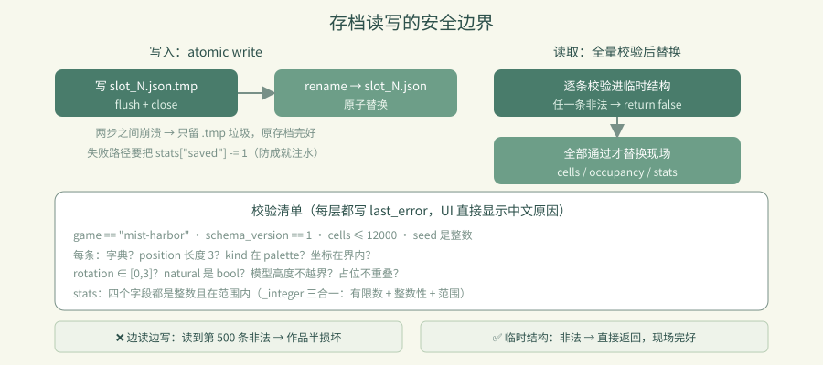
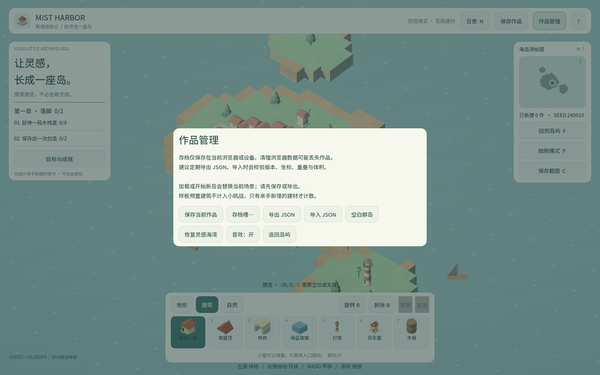

卷 4 · 第 21 章 存档槽与文档格式：坏存档不能毁掉当前作品
本章目标：读懂
load_document()的全量校验 + 原子替换，
以及"先写 .tmp 再改名"为什么在 Web 上尤其重要。
对应任务：T18 / T19（存档槽） | 对应文件：world_model.gd的文档与槽位部分
21.1 文档长什么样
{
"schema_version": 1,
"game": "mist-harbor",
"seed": 240910,
"cells": [
{"position": [0,0,0], "kind": "beacon", "rotation": 0, "natural": false},
{"position": [3,0,2], "kind": "cottage", "rotation": 2, "natural": false}
],
"stats": {"rotated": 12, "undone": 3, "saved": 5, "removed": 1}
}| 字段 | 作用 |
|---|---|
| --- | --- |
schema_version / game | 格式标识：拒绝别的游戏/别的版本的文件 |
seed | 世界种子，保证地形可复现 |
cells | 只存原点格（+ rotation），多格由 height 推导占哪些格 |
natural | 区分起始村庄与玩家建造 |
stats | 操作统计（成就跨会话累计） |
按 (x, y, z) 排序后写入 → 同一份世界每次序列化结果完全一致，
方便 diff 与校验（第 17 章的"可复现"是同一思路）。
21.2 载入：先全量校验，再整体替换
func load_document(document) -> bool:
last_error = ""
if not document is Dictionary or document.get("game") != "mist-harbor" \
or document.get("schema_version") != SAVE_VERSION:
last_error = "不是受支持的雾港存档（需要版本 1）。"
return false
...
# 全部验证完成后才替换现场，坏存档不能破坏当前作品。
var next_cells := {}
var next_occupancy := {}
for entry in entries:
... # 逐条校验，任何一条不合法就 return false（此时 cells 没被动过）
cells = next_cells # ← 只有走到这里才替换
occupancy = next_occupancy这是本章最重要的一行注释。 两种做法的差别：
| 做法 | 后果 |
|---|---|
| --- | --- |
| ❌ 边读边写 | 读到第 500 条发现非法 → 前 499 条已生效，作品半损坏 |
| ✅ 先建临时结构，全部通过再替换 | 非法 → 直接返回 false，现场完好无损 |
校验清单（每层都写 last_error，UI 能直接显示中文原因）：
游戏标识 / 版本 → 格子总数 ≤ 12000 → seed 是整数 →
每条：是字典？position 长度 3？kind 在 palette 里？坐标在范围内？
rotation ∈ [0,3]？natural 是 bool？模型高度不越界？→ 占位不重叠？
stats：四个字段都是整数且在范围内_integer() 还专门检查有限数与整数性，挡住 NaN / 1.5 / 超大值。
21.3 保存：先写 .tmp，再改名
func save_slot(index) -> bool:
stats["saved"] += 1
var output := FileAccess.open(path + ".tmp", FileAccess.WRITE)
if output == null:
stats["saved"] -= 1 # ← 失败要回滚计数器
last_error = "无法写入存档槽 %d，请使用导出 JSON。"
return false
output.store_string(JSON.stringify(to_document()))
output.flush(); output.close()
if DirAccess.rename_absolute(path + ".tmp", path) != OK:
stats["saved"] -= 1
last_error = "保存失败，请导出 JSON 备份。"
return false
current_slot = index
dirty = false为什么多一步改名？
写一半断电/崩溃 → 只会留下一个 .tmp 垃圾文件，原来的存档完好。
直接写目标文件则可能留下半截 JSON——下次再也读不回来。
📌 这个模式叫 atomic write，是本地与 Web 都通用的稳妥做法。
另一个细节：stats["saved"] += 1 之后若失败要 -= 1，
否则"档案管理员"成就（保存 5 次）会被失败的操作注满水。
21.4 三个槽位与旧存档迁移
const SLOT_COUNT := 3
static func slot_path(index: int) -> String:
return "user://slot_%d.json" % [clampi(index, 1, SLOT_COUNT)]
func migrate_legacy_save() -> bool:
"""First run after the slot upgrade: keep the old single save as slot 1."""
if not FileAccess.file_exists(SAVE_PATH) or FileAccess.file_exists(slot_path(1)):
return false
return DirAccess.copy_absolute(SAVE_PATH, slot_path(1)) == OK- 槽位是
clampi过的 → 越界索引不会写出奇怪的路径 - 迁移只做一次，且不覆盖已有 slot 1
- 老用户升级后作品还在——这是"数据格式演进"的最小成本做法
slot_info() 还支持读存档的修改时间与格子数，UI 直接显示"槽位 2：128 格，9 月 15 日保存"。

🌩 在云端 agent（web-cb）里是什么样
| 🖥 本地路线 | 🌩 云端 agent（web-cb） | |
|---|---|---|
| --- | --- | --- |
user:// | 本地文件（同步/近同步） | Web = IndexedDB，异步写（第 13 章的坑） |
| atomic write | 本地 rename 很快 | 同样有效；更要避免"写完再写别的" |
| 校验 | load_document | 同；云端建议加一条"坏存档不改变现场"的断言 |
| 风险 | 相对低 | Web 上写盘顺序/时机更容易出问题 |
| 验证 | L1 往返一致 | L3 的"保存 → 刷新 → 世界还在"（第 30 章） |
🌩 云端必测组合：写入存档 → 立刻刷新 → 内容一致。
这是唯一能验证 IndexedDB 异步写是否真的落盘的手段。
21.5 常见坑速查（本章）
| 现象 | 原因 | 处理 |
|---|---|---|
| --- | --- | --- |
| 坏存档把作品搞坏 | 边读边写 | 先建临时结构，全通过再替换 |
| 崩溃后存档读不了 | 直接写目标文件 | .tmp + rename |
| 成就计数虚高 | 失败时没回滚 stats | 失败路径 -= 1 |
| 别的游戏存档能载入 | 没校验 game 字段 | 校验标识与版本 |
NaN / 小数坐标进来了 | 只判了类型没判整数性 | _integer() 三合一检查 |
| 槽位路径越界 | 没 clampi | clampi(index, 1, SLOT_COUNT) |
21.6 本章作业
- 说明"先全量校验再替换"能防止什么，写一个会触发该 bug 的操作序列
- 解释 atomic write 的两步，以及崩溃发生在两步之间会怎样
- 找出
load_document里所有会写last_error的分支，说明 UI 怎么用它 - 设计一条断言：载入一个非法存档后，
placed_count()与revision应如何变化？
🎓 教学提示（给教师 / 直播主）
- 概念锚点：失败要可回滚，写入要原子。数据安全的两个基本动作。
- 课堂演示：手写一个缺字段的 JSON，载入后看 UI 弹出中文错误且世界完好。
- 高频误解：学生觉得"自己写的存档不会坏"。提醒：用户会手改、会跨版本、会传输截断。
- 讨论题：如果要支持 schema_version 2（比如加旋转轴），迁移代码该怎么写？
- 批改要点：作业 4 必须答出"两者都不变"（非法存档不应触碰现场）。
🖼 本章图集

📹 录屏分镜（9 分钟）
| 时间 | 画面 | 解说词要点 |
|---|---|---|
| --- | --- | --- |
| 00:00–01:30 | 文档结构逐字段 | "只存原点格，多格靠 height 推。" |
| 01:30–03:30 | load_document 的临时结构 + 注释 | "坏存档不能毁掉当前作品。" |
| 03:30–05:00 | 校验清单（含 _integer 三合一） | |
| 05:00–06:30 | atomic write 两步 + 计数回滚 | "先写 tmp，再改名。" |
| 06:30–08:00 | 槽位与旧存档迁移 | |
| 08:00–09:00 | 作业 + 预告（章节引导） |
🎬 视频位（待录制）
把录好的视频放到course/media/video/21/（mp4 / webm / mov），重新执行 python tools/course_build.py 即会自动内嵌；首帧默认用本章第一张截图作为封面。分镜脚本见上一节。🖼 配图清单
| 文件名 | 内容 | 生成方式 |
|---|---|---|
| --- | --- | --- |
21-slots-dialog.png | 存档槽对话框（三个槽位信息） | python tools/course_capture.py --chapter 21 |
21-saved-state.png | 保存后的状态（dirty 消失） | 同上 |
🎥 直播脚本（L3 片段，12 分钟）
- 开场："你的存档有多脆弱？"——演示一个半截 JSON
- 演示：手改存档文件（删一个字段），看游戏优雅拒绝且作品完好
- 互动：让观众检查自己项目的存档是否有校验
- 收尾：预告章节引导与成就
❓ 本章 FAQ
Q：存档多大？
A：上限 4 MB（requirements.md）。12000 格按当前格式估算远小于此，主要给未来留余量。
Q：能导出成文件分享吗？
A：可以——import_json() 支持导入文本，to_document() 可导出 JSON，社区分享作品就靠它。
Q：三个槽位够吗？
A：对本实训的创作规模足够；要扩展只需改 SLOT_COUNT，UI 会自动跟随（数据驱动）。